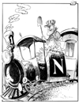

Lørdag 9. desember
Lørdag 9. desember
| LEDERE |
Morgen: Varsel om kamp mot bedre innsyn Sjanse for OSSE Moral |
Dagens Inge:  |
|
KRONIKK |
Fra Kardemomme by til Cyberspace KRISTIN CLEMET Få norske politikere har gitt seg i kast med informasjonsteknologien. Den er hverken god eller ond i seg selv. Den er nøytral, men den kan brukes til godt og ondt, skriver Kristin Clemet, tidligere statsråd, nå redaktør i Tidens Tegn. Hun spør hvordan politikken vil forholde seg til denne teknologien. |
Bakgrunn/Kommentar: Arkiv